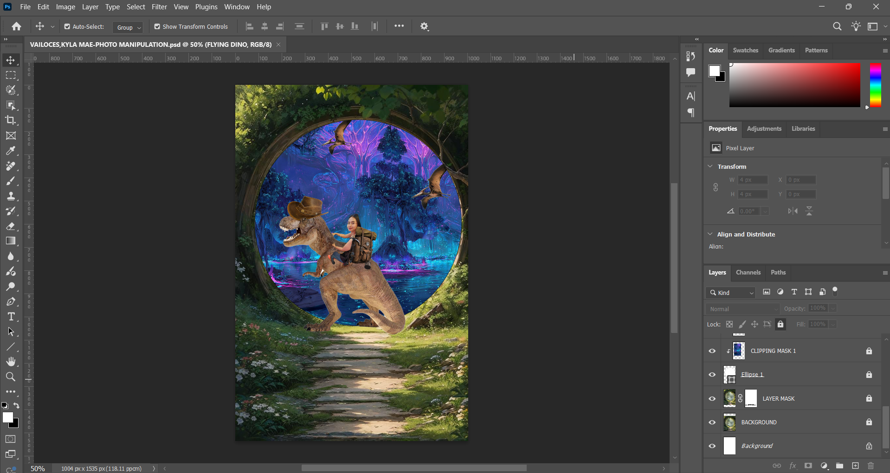

Description:
This photo manipulation project was created in Adobe Photoshop, featuring a fantasy-inspired scene where I travel on the back of a dinosaur into another dimension of the world. The artwork combines imagination, creativity, and digital editing techniques to create a surreal and cinematic atmosphere.
Through the use of blending, masking, and layered compositions, I transformed ordinary images into a visually engaging fantasy environment. This project helped me improve my creativity and skills in photo manipulation, composition, and visual storytelling.
Tools / Technologies Used:
Adobe Photoshop
Layer Mask
Clipping Mask
Image Blending and Composition